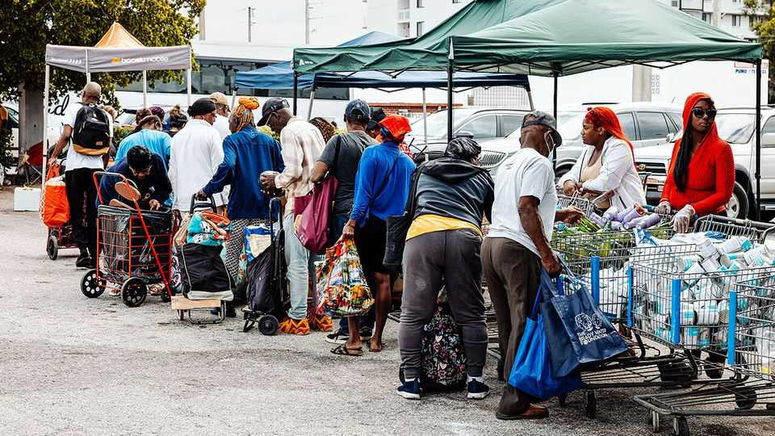

Donald Trump’s food-stamp overhaul is beginning to bite
Federal reforms have left the states with a growing bill

Jul 30th 2026
On a recent morning in Tucson, Wayne Zhang pulled his car around the back of a church. His 92-year-old father, Youde, who has dementia, sat beside him. They parked alongside a row of saguaro cacti and palo verde trees as volunteers from the Interfaith Community Services food bank loaded boxes of tuna, peanut butter and rice into their trunk. Youde receives money from the Supplemental Nutrition Assistance Programme (snap), a federal welfare scheme known as food stamps. But recently his monthly benefits were cut from $293 to $161. Adjusting has been difficult, says Wayne. “Here we can get my dad a little bit more food.”
Across America, millions of people like Youde are finding life harder. One in nine Americans receives food stamps; around 70% of recipients are pensioners, children or people with disabilities. But the One Big Beautiful Bill Act (obbba), passed last year without a single Democratic vote, is projected to cut federal spending on snap by about a fifth over the coming decade. Enrolment has already fallen by 12%, or around 5m people.
The obbba did more than cut food stamps. It shifted costs to the states and gave them a powerful incentive to reduce the number of people receiving benefits. As a result, many are tightening the programme’s administration in ways that may push eligible recipients off the rolls.
For years after its creation snap enjoyed bipartisan support. The modern version of the programme was signed into law by Richard Nixon in 1971 amid concerns about malnutrition. “It was viewed as a national emergency”, says Robert Greenstein of the Brookings Institution, a think-tank. But from the 1980s onwards, Republicans repeatedly sought to trim the programme. The obbba used cuts to snap and Medicaid, the health programme for the poor, to partially offset the cost of its tax cuts.
The law reduces federal spending on snap in three ways. First, it extends work requirements to more recipients, causing some to lose eligibility or drop off the rolls. Second, beginning in October, states will see their share of snap’s operating costs rise from half to three-quarters.
Finally—and most consequentially—the federal government will no longer pay the full cost of snap benefits. Starting next year states that make too many errors determining recipients’ eligibility or benefit levels will have to pay some of those costs. Most will be on the hook for between 5% and 15%. That is likely to amount to $100m or more each year for almost half of states, according to the Centre on Budget and Policy Priorities (cbpp), another think-tank. Richer states such as Connecticut say they can absorb the hit. Others, including Arizona, face stark trade-offs.
The bill-splitting will not begin until October 2027, but initial payments will be based on error rates from previous years. All but nine states have rates high enough to trigger payments. Brooke Rollins, the agriculture secretary, whose department oversees snap, argues that this is “further proof that state accountability is severely lacking”. But calculating snap benefits is complicated. They depend on household composition and net income. Routine changes in circumstances, such as a worker adjusting her hours, can lead to errors.
States are scrambling to drive down their error rates “at almost any cost”, says the cbpp’s Joseph Llobrera. Many are demanding more paperwork. Some, however, lack the staff to process it. Arizona’s welfare agency cut its workforce by 5% in 2025, and snap enrolment has since fallen by half. Michael Wisehart, the agency’s director, says his state has simply moved faster than others to respond to the obbba.
The National Governors Association has asked for the cost-sharing measures to be delayed until 2030. But a reprieve seems unlikely, leaving states to consider their options. Some are spending millions to upgrade their error-spotting systems. Others are hiring additional staff. The most drastic option would be to leave SNAP. In a recent survey, 11% of state SNAP administrators said that was a potential risk.
Back in Tucson, the changes are already reverberating through local politics. Juan Ciscomani, the Republican congressman for part of the city, voted for the obbba. As people drive up to the food bank, they pass yard signs for him and JoAnna Mendoza, his Democratic opponent. Ms Mendoza grew up on food stamps. She says she doesn’t have to remind voters that Mr Ciscomani supported President Trump’s bill. “They know,” she says. “They tell me.” ■
Stay on top of American politics with The US in brief, our daily newsletter with fast analysis of the most important political news, and Checks and Balance, a weekly note that examines the state of American democracy and the issues that matter to voters.